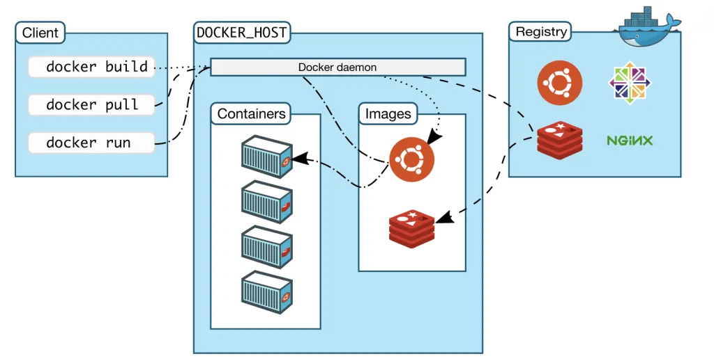
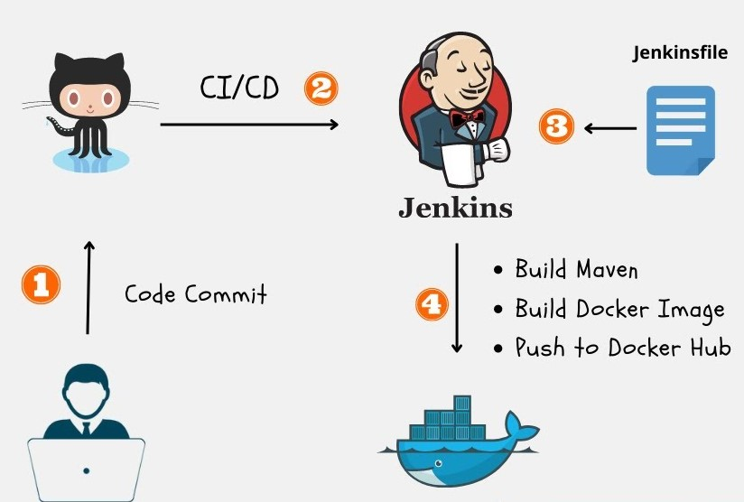
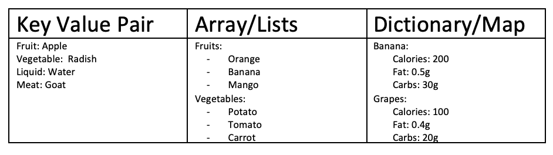

Docker


Docker is an open-source platform used for automating the deployment,
scaling, and management of applications. It allows applications to run
in isolated containers, which are lightweight and portable.
Docker simplifies the process of developing, shipping, and running
applications, as it provides a consistent environment regardless of the
underlying system.
Docker uses a client-server architecture, where the Docker client
communicates with the Docker daemon, which in turn manages the
containers.
FROM python:3.8
# Use the official Python 3.8 base image as the starting point for our image
WORKDIR /app
# Set the working directory inside the container to /app
COPY requirements.txt .
# Copy the requirements.txt file from the host into the container's /app directory
RUN pip install --no-cache-dir -r requirements.txt
# Install the Python dependencies listed in the requirements.txt file
COPY . .
# Copy the rest of the application code from the host into the container's /app directory
EXPOSE 8000
# Expose port 8000 on the container
CMD ["python", "app.py"]
# Define the command to run when the container starts
Jenkins

Jenkins is an open-source automation server used for continuous
integration and continuous delivery (CI/CD) pipelines.
It allows developers to automate the entire build, test, and deployment
process of their applications.
Jenkins provides a web-based interface for configuring and managing
build jobs, which can be triggered by various events such as code
changes or scheduled intervals.
Jenkins supports a wide range of plugins and integrations, making it
highly customizable and extensible.
pipeline {
agent any // Defines that this pipeline can run on any available agent (slave)
stages {
stage('Build') {
steps {
echo 'Building the project' // Prints 'Building the project' to the console
// Your build steps here...
// For example, you might run a shell command or a build script
}
}
stage('Test') {
steps {
echo 'Running tests' // Prints 'Running tests' to the console
// Your test steps here...
// For example, you might run unit tests or integration tests
}
}
stage('Deploy') {
steps {
echo 'Deploying the project' // Prints 'Deploying the project' to the console
// Your deployment steps here...
// For example, you might deploy to a specific environment or trigger another job
}
}
}
post {
always {
echo 'Pipeline completed' // Prints 'Pipeline completed' to the console regardless of the outcome
}
success {
echo 'Pipeline succeeded' // Prints 'Pipeline succeeded' to the console if the pipeline succeeds
}
failure {
echo 'Pipeline failed' // Prints 'Pipeline failed' to the console if the pipeline fails
}
}
}
YAML


YAML is a human-readable data serialization format. It stands for "YAML
Ain't Markup Language."
YAML is commonly used for configuration files and data exchange between
languages or systems.
It provides a simple syntax that is easy to read and write, making it
popular for defining complex data structures.
YAML files consist of nested key-value pairs and can include lists and
maps.
The .yml file extension is commonly used to indicate that a file contains data written in YAML format. However, it is important to note that the choice of file extension (.yml or .yaml) does not affect the content or the way YAML is interpreted. Both .yml and .yaml files can be used interchangeably.
Docker Image and Docker Container
Docker Image
An image is a lightweight, standalone, and executable software package
that includes everything needed to run a piece of software, including
the code, runtime, libraries, and system tools.
Images can be built using Dockerfiles, which are text files that specify
the steps to create an image.
Docker Container
A container is an instance of an image that can be run, started,
stopped, moved, and deleted.
Containers provide an isolated and reproducible environment for running
applications.
Each container runs independently of other containers, with its own
resources and filesystem.
run and CMD Command in Dockerfile
RUN Command
The RUN command is used in a Dockerfile to execute commands during the
build process of an image.
It allows you to install dependencies, compile code, and perform other
build-time tasks.
Each RUN command creates a new layer in the image, and the result of the
command is saved in that layer.
CMD Command
The CMD command is used in a Dockerfile to specify the default command
that should be run when a container is started from the image.
It defines the main executable for the container. Only the last CMD
instruction in a Dockerfile has an effect.
Command: docker pull vats/website
This command is used to pull the Docker image "vats/website" from the Docker Hub registry.
Command: docker images
This command lists all the Docker images that are currently available on your system.
Command: docker scout quickview vats/website
This command provides a quick summary view of the Docker container associated with the image "vats/website".
Command: docker ps
This command lists all the running Docker containers on your system.
Command: docker stop 0a53
This command stops the Docker container with the ID "0a53".
Command: docker ps -a
This command lists all the Docker containers, including the stopped ones, on your system.
Command: docker hub and Docker
Docker Hub is a cloud-based registry that allows you to access and share Docker images. Docker is the platform that enables the creation, deployment, and management of Docker containers.
Kubernetes

Kubernetes (also known as K8s) is an open-source container orchestration
platform that automates the deployment, scaling, and management of
containerized applications.
It provides a highly available, scalable, and fault-tolerant environment
for running containers across multiple machines.
Kubernetes abstracts the underlying infrastructure and provides a
consistent API for managing and interacting with containers.
It supports automatic scaling, load balancing, service discovery, and
rolling updates, making it suitable for running and managing
production-grade applications.
YouTube Playlist
devhints.io
docker.pdf